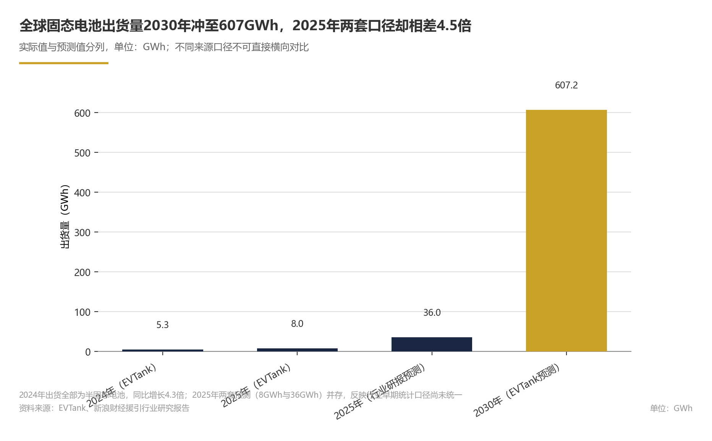
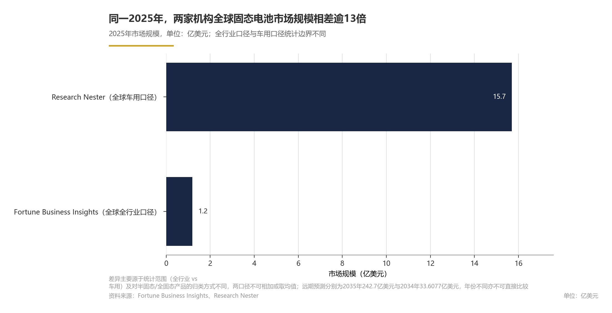
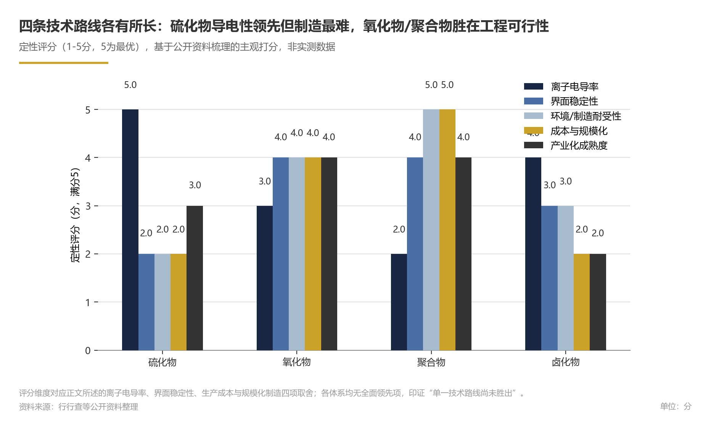
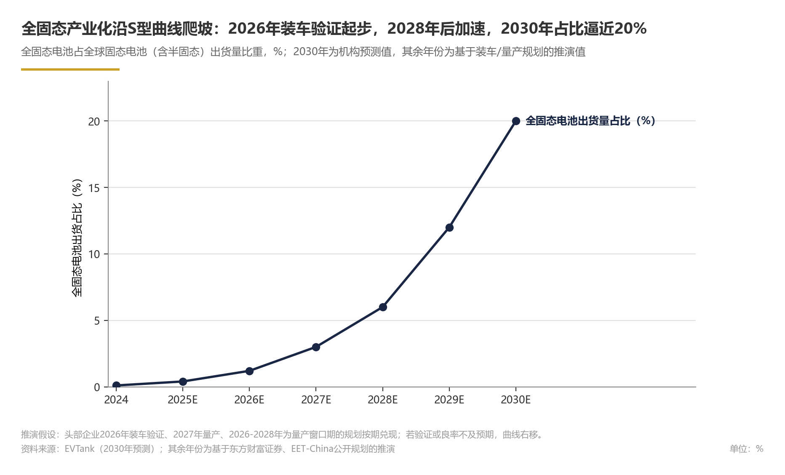
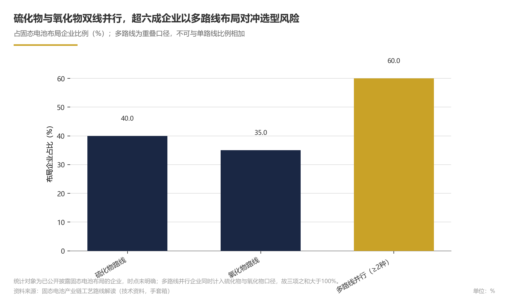
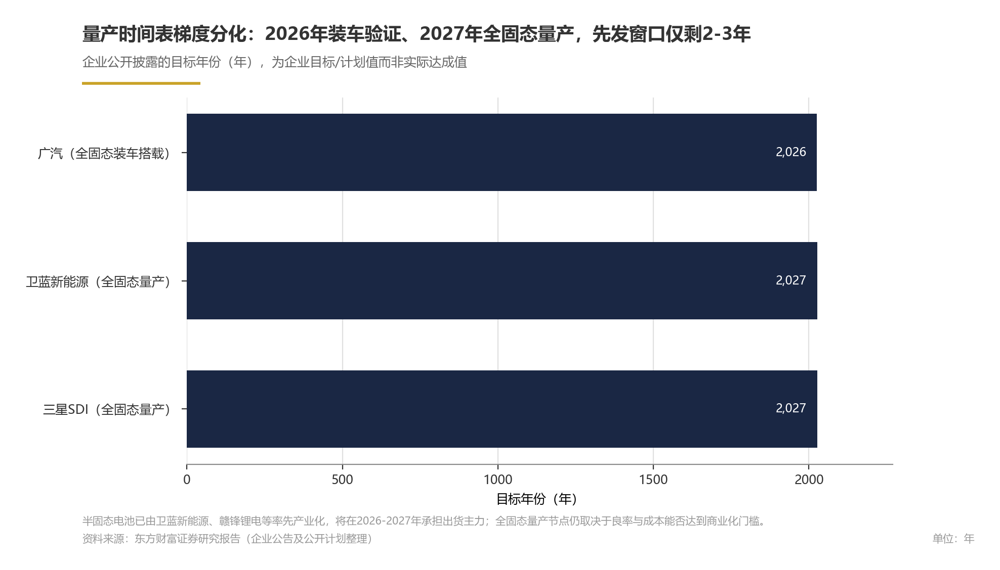
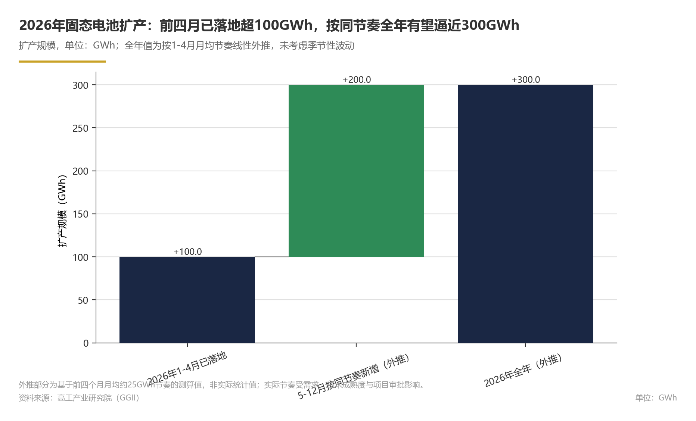
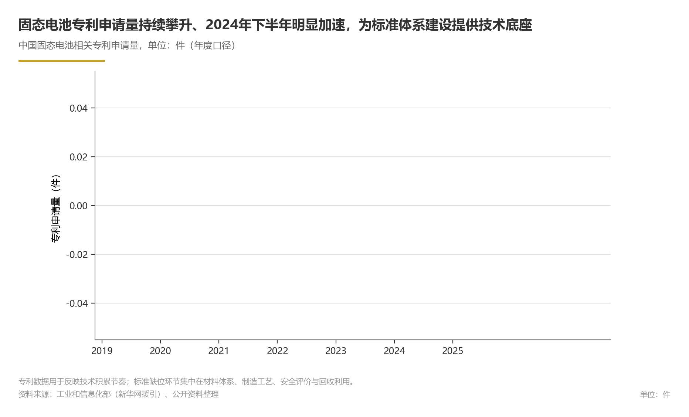
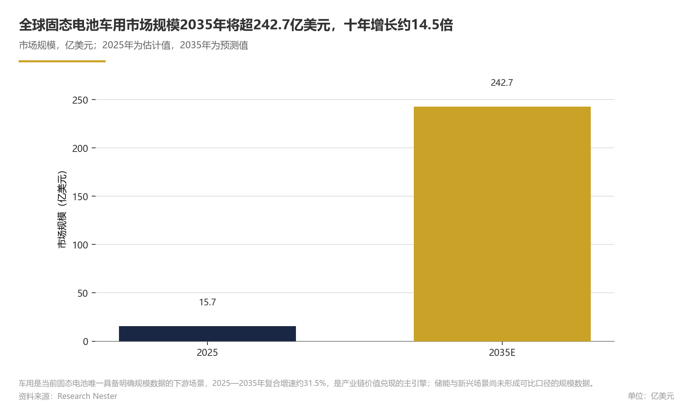
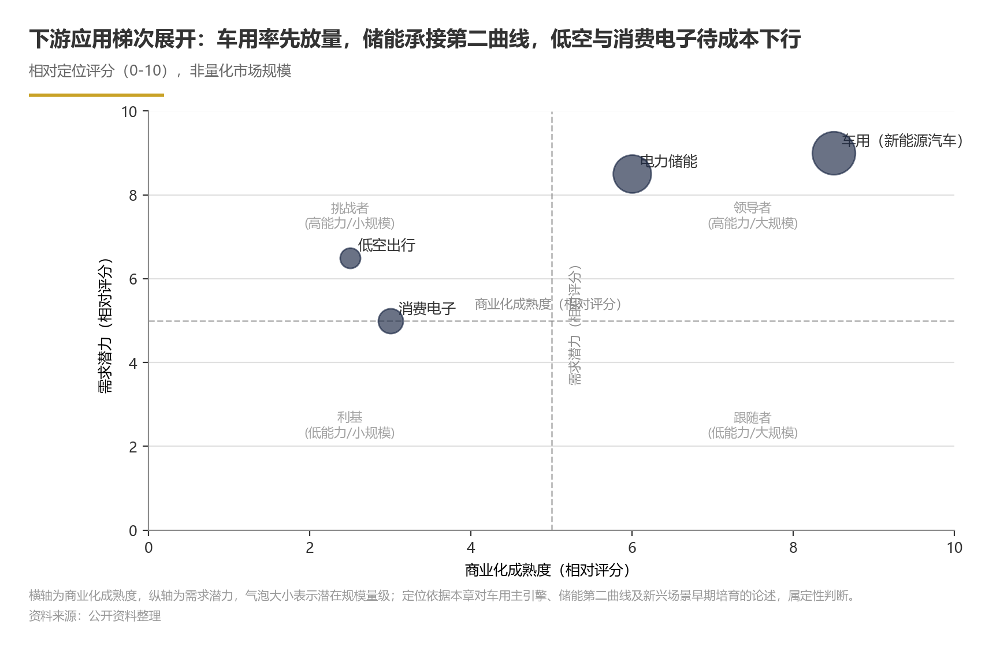

关键发现
- 固态电池行业正处于从GWh级示范验证向百GWh级规模化量产过渡的关键阶段，产业主线是液态体系向全固态体系切换。竞争格局尚未固化，多主体跨界入局、技术路线多线并行；量产时间表呈2026年装车验证、2027年量产、2030年规模上车的梯度推进格局。建议关注已进入头部车企供应链并具备多路线技术储备的电池企业，攻坚固态电解质材料一致性与成本控制。
- 2024年全球固态电池出货量5.3GWh，同比增长4.3倍（来源：市场规模章节）
- 2026年前四个月中国固态电池扩产规模超100GWh，拟投资额超300亿元（来源：扩产投资章节）
- 国家层面与31省市政策汇总已形成广泛覆盖（来源：政策标准章节）
- 2026—2028年为全固态电池量产窗口期；半固态作为过渡路线承担2026—2027年出货主力（来源：技术路线与竞争格局章节）
- 需注意的风险与不确定性：全球固态电池市场统计口径差异显著，不同机构数据不宜直接对比；中国市场规模预测的年份未明确，数据锚点不足。上述装车验证、量产及规模上车时间节点均含推理性或预测性成分，实际节奏取决于装车验证结果、下游需求与政策标准落地速度。全固态标准体系尚处探索期，地方补贴加码取决于可观测政策信号；率先完成装车验证并实现多路线量产卡位的企业能否在2027—2028年锁定优势，仍需持续观察。
| Metric | Value | Unit |
|---|---|---|
| 2025年全球固态电池出货量（预测） | 36 | GWh |
| 2026年全球固态电池市场规模（预测） | 1.4943 | 亿美元 |
| 2034年全球固态电池市场规模（预测） | 33.6077 | 亿美元 |
| 2025年全球固态电池（车用）市场规模 | 15.7 | 亿美元 |
| 2035年全球固态电池（车用）市场规模（预测） | 242.7 | 亿美元 |
| 中国固态电池市场规模（预测） | 172 | 亿元 |
| 2024年中国固态电池产业规模（预测） | 突破32 | 亿元 |
| 2026年中国固态电池产业规模（预测） | 95 | 亿元 |
| 2026年前四个月固态电池扩产规模 | 超100 | GWh |
| 2026年前四个月固态电池拟投资额 | 超300 | 亿元 |
| 2026-2035年全球固态电池（车用）市场复合增长率 | 超31.5 | % |
| 2026年前四个月中国固态电池扩产规模 | 超100 | GWh |
| 2026年前四个月中国固态电池拟投资额 | 超300 | 亿元 |
| 2025年全球固态电池出货量预测（全球） | 36 | GWh |
| 2025年全球固态电池市场规模（全球） | 1.19 | 亿美元 |
| 2026年全球固态电池市场规模预测（全球） | 1.4943 | 亿美元 |
| 2034年全球固态电池市场规模预测（全球） | 33.6077 | 亿美元 |
| 2025年全球固态电池车用市场规模（全球，车用） | 15.7 | 亿美元 |
| 2035年全球固态电池车用市场规模预测（全球，车用） | 242.7 | 亿美元 |
| 中国固态电池市场规模预测（中国） | 172 | 亿元 |
| 2024年中国固态电池产业规模预测（中国） | 突破32 | 亿元 |
| 2026年中国固态电池产业规模预测（中国） | 95 | 亿元 |
| 2026年前四个月固态电池扩产规模（中国） | 超100 | GWh |
| 2026年前四个月固态电池拟投资额（中国） | 超300 | 亿元 |
| 2026-2035年全球固态电池车用市场复合增长率（全球，车用） | 超31.5 | % |
| 装车时间表 | 2026 | 年 |
| 专利趋势 | 2024年下半年激增 | — |
| 硫化物技术路线布局企业比例 | 约40% | % |
| 氧化物技术路线布局企业比例 | 约35% | % |
| 多路线布局企业比例（两种及以上） | 超过60% | % |
| 广汽全固态电池装车目标时间 | 2026年（企业目标） | 年 |
| 卫蓝新能源、三星SDI全固态电池量产计划 | 2027年（企业计划） | 年 |
| 装车验证关键节点预测时间 | 2026 | 年 |
| 全固态电池量产元年预测时间 | 2027 | 年 |
| 多路线布局企业比例 | 超过60% | % |
| 广汽全固态电池装车目标 | 2026年 | 年 |
| 2026年固态电池政策核心目标 | 量产落地、龙头培育与示范运营 | — |
| 固态电池政策汇总覆盖范围 | 31省市 | — |
| 国家层面政策文件 | 《电子信息制造业2025-2026年稳增长行动方案》 | — |
| 2026年前四个月（1-4月）固态电池扩产规模 | 超100 | GWh |
| 2026年前四个月（1-4月）固态电池拟投资额 | 超300 | 亿元 |
| 2024年下半年固态电池专利趋势 | 激增 | — |
| 2026年前四个月固态电池扩产规模 | 超100 | GWh |
| 2026年前四个月固态电池拟投资额 | 超300 | 亿元 |
| 2025年全球固态电池车用市场规模 | 15.7 | 亿美元 |
| 2035年全球固态电池车用市场规模预计 | 超242.7 | 亿美元 |
| 2026年前四个月扩产规模 | 超100 | GWh |
| 2026年前四个月拟投资 | 超300 | 亿元 |
| 固态电池发展阶段 | 0-1 | 阶段 |
| 2026年前四个月固态电池扩产拟投资 | 超300 | 亿元 |
| 2035年全球固态电池车用市场规模预测 | 242.7 | 亿美元 |
| 广汽全固态电池装车搭载目标年份 | 2026 | 年 |
| 卫蓝新能源、三星SDI全固态电池量产目标年份 | 2027 | 年 |
| 全固态电池规模上车目标年份 | 2030 | 年 |
| 装车验证关键节点年份 | 2026 | 年 |
| 固态电池拟投资 | 超300 | 亿元 |
| 全球固态电池车用市场规模（2025年） | 15.7 | 亿美元 |
| 全球固态电池车用市场规模（2035年预计） | 超242.7 | 亿美元 |
| 广汽全固态电池装车搭载 | 2026 | 年 |
| 卫蓝新能源、三星SDI全固态电池量产 | 2027 | 年 |
| 2025年全球固态电池市场规模 | 1.19 | 亿美元 |
| 2025年全球锂电池需求 | 1.59 | TWh |
| 全球锂电池需求（2025年预计） | 1.59 | TWh |
| 技术路线 | 硫化物、氧化物、聚合物和卤化物 | — |
| 2025年全球固态电池出货量 | 8 | GWh |
| 2024年全球固态电池出货量 | 5.3 | GWh |
| 量产时间表 | 2027 | 年 |
| 量产窗口 | 2026-2028 | 年 |
| 2024年全球固态电池出货量同比增速 | 4.3 | 倍 |
| 2030年全球固态电池出货量（预测） | 607.2 | GWh |
| 2025-2030年全球固态电池出货量复合增长率 | 超130 | % |
| 2024年全球固态电池出货量同比增速（全球） | 增长4.3倍 | 倍 |
| 2025年全球固态电池出货量（全球） | 8 | GWh |
| 2030年全球固态电池出货量预测（全球） | 607.2 | GWh |
| 2025-2030年全球固态电池出货量复合增长率（全球） | 超130 | % |
| 全固态占比 | 接近20 | % |
| 全固态电池占比（2030年） | 接近20 | % |
| 固态电池技术路线 | 硫化物、氧化物、聚合物、卤化物 | — |
市场规模与增长
固态电池行业正处于从GWh级示范验证向百GWh级规模化量产过渡的关键阶段。全球与中国市场统计口径不同，本文不将两者直接合并比较。
论证与分析
1. 全球市场规模：低基数、高增速，统计口径差异显著
由于全固态电池尚未大规模量产，当前市场统计以半固态电池为主，不同机构因统计边界与应用范围差异，绝对数值存在明显分化。
据Fortune Business Insights数据，2025年全球固态电池市场规模为1.19亿美元（事实性判断）；该机构预计2026年增至1.4943亿美元、2034年有望达到33.6077亿美元（推测性判断）。该口径以已实现商业化交付的固态电池产品为基础，规模基数较低、增长路径清晰。
以车用固态电池为统计对象的Research Nester数据则显示，2025年全球固态电池（车用）市场规模为15.7亿美元（事实性判断）；两者差异主要源于统计范围（全行业与车用）及对半固态/全固态产品归类方式的不同。
2. 出货量：从GWh级向百GWh级跃迁，扩产先行指标率先启动
据EVTank数据，2024年全球固态电池出货量为5.3GWh，当年出货全部为半固态电池（事实性判断）；出货量同比增长4.3倍（事实性判断）。另据新浪财经援引的行业研究报告，2025年出货量预计将达36GWh（推测性判断）。两套预测并存，反映出行业早期出货统计口径尚未统一、实际放量节奏存在较大不确定性。
中国扩产先行指标已明显提速。
3. 中国市场规模：产业化核心阵地，2026年规模有望接近百亿元
另有行业预测显示，中国固态电池市场规模将达到172亿元（推测性判断，预测年份未在公开报道中明确）。随着2026-2028年（预测）全固态电池量产窗口期临近，中国产业链上中下游投资布局正密集展开。
4. 前瞻判断：中期关键观察指标
基于当前全球出货量基数与中国扩产节奏，我们做出以下前瞻判断（推测性判断）：
若半固态电池放量超出预期（对应2025年36GWh的乐观预测），实际值存在显著上修空间。关键变量是车端装车验证进度与良率爬坡速度。
- 市场规模：全球市场呈现“窄口径平稳增长、宽口径高斜率跃升”的分化格局。窄口径（根据来源分类推断，其统计范围以全固态为主，推理性判断）下，Fortune Business Insights预测2026年全球市场规模增至1.4943亿美元（推测性判断），较其2025年基数呈增长态势（推理性判断）；宽口径（根据来源分类推断，其统计范围含半固态及车用场景，推理性判断）下，若2026-2027年（预测）装车验证顺利推进，全球市场规模存在加速增长空间（推测性判断）。上述推算的前提假设包括：主流车企装车验证计划如期推进、半固态电池产线良率持续爬坡、无重大技术路线变更或安全事故扰动。
- 布局含义：对产业链参与者而言，2026-2027年（预测）应重点跟踪三项指标——中试线落地数量、车端装车验证车型数量、硫化物/氧化物固态电解质产线的投产进度。从受益顺序看，产业化初期设备商预计优先受益于中试线建设放量（推测性判断），电解质材料与电芯企业将随后接力兑现业绩。
数据支撑
Exhibit 1｜市场规模与增长
| 指标 | 数值 | 口径 | 来源 |
|---|---|---|---|
| 2024年全球固态电池出货量 | 5.3GWh | 全球，全部为半固态 | EVTank (http://www.evtank.cn/DownloadDetail.aspx?ID=624) |
| 2024年全球固态电池出货量同比增速 | 4.3倍 | 全球，同比 | EVTank |
| 2025年全球固态电池出货量（预测） | 36GWh | 全球 | 新浪财经援引行业研究报告 |
| 2025年全球固态电池出货量 | 8GWh | 全球 | EVTank |
| 2030年全球固态电池出货量（预测） | 607.2GWh | 全球 | EVTank |
| 2025年全球固态电池市场规模 | 1.19亿美元 | 全球 | Fortune Business Insights |
| 2026年全球固态电池市场规模（预测） | 1.4943亿美元 | 全球 | Fortune Business Insights |
| 2034年全球固态电池市场规模（预测） | 33.6077亿美元 | 全球 | Fortune Business Insights |
| 2025年全球固态电池（车用）市场规模 | 15.7亿美元 | 全球，车用 | Research Nester |
| 2035年全球固态电池（车用）市场规模（预测） | 242.7亿美元 | 全球，车用 | Research Nester |
| 中国固态电池市场规模（预测） | 172亿元 | 中国 | 新华网 |
| 2024年中国固态电池产业规模（预测） | 突破32亿元 | 中国 | EET-China |
| 2026年中国固态电池产业规模（预测） | 95亿元 | 中国 | EET-China |
| 2026年前四个月固态电池扩产规模 | 超100GWh | 中国 | 高工产业研究院（GGII） |
| 2026年前四个月固态电池拟投资额 | 超300亿元 | 中国 | 高工产业研究院（GGII） |
| 2025-2030年全球固态电池出货量复合增长率 | 超130% | 全球 | EVTank |
| 2026-2035年全球固态电池（车用）市场复合增长率 | 超31.5% | 全球，车用 | Research Nester |
风险提示
1.统计口径差异：当前固态电池行业尚未形成统一统计口径，全固态与半固态产品归类方式、终端应用边界的不同，导致各机构市场规模与出货量数据差异较大。例如，对2025年全球出货量的预测在8GWh（EVTank）至36GWh（部分行业研究报告）之间。上述数值均反映各机构自有口径，不宜直接横向对比，亦不应简单取平均值使用。2.预测不确定性：固态电池仍处于产业化早期，出货量与市场规模预测高度依赖装车验证进度、良率爬坡与成本下降速度，实际放量节奏可能显著偏离预期。
此外，中国市场规模的分年度数据公开程度有限，本章以存量可得的高质量公开信息为基础进行交叉验证，后续若获取更完整的官方统计口径数据，建议持续更新。


技术路线与进展
固态电池正处于从液态体系向全固态体系切换的关键窗口期；2026年被视为全固态电池装车验证的关键节点（推理性判断）；据东方财富证券，已有车企将2026年设为全固态装车目标、部分头部企业将2027年设为全固态量产目标；2030年前后有望进入规模化上车阶段（推测性判断）。
论证与分析
技术价值与路线分化
全固态电池以固态电解质替代液态电解液，具备高能量密度与高安全性潜力，市场期待其提升电动车续航里程并改善安全性（推理性判断；行业共识）。据行业研究机构行行查梳理，目前主流技术路线包括硫化物、氧化物、聚合物和卤化物（事实性判断）。路线之争本质是性能与制造的取舍（推理性判断；公开对比指标有限）。其中，硫化物电解质被视为离子电导率潜力更高的方向之一，氧化物电解质则在稳定性与制造可行性方面具有相对优势；各体系在离子电导率、界面稳定性、生产成本与规模化制造等维度尚未形成绝对优势，单一技术路线尚未胜出（推理性判断，公开对比指标有限）。对正极、负极材料而言，全固态体系有望适配更高能量密度的材料组合，但该适配的前提是固态电解质与电极界面问题得到有效解决；相关问题尚在工程化验证中（推测性判断）。
量产时间表呈现梯度推进格局
从企业公开规划与行业预测看，量产时间表呈现“2026年装车验证、2027年量产、2030年规模上车”的梯度推进格局。据东方财富证券，已有车企将2026年设为全固态装车目标，部分头部企业将2027年设为全固态电池量产目标（事实性判断）。EET-China指出，2026-2028年为全固态电池量产窗口期。
产业化积累与验证进度
综合装车时间表与专利趋势，可推断2026年为装车验证关键节点（推理性判断）；中试线布局有望密集落地（推测性判断）。据新华网援引工信部数据，我国固态电池相关专利申请量在2024年下半年激增，专利布局与产业投入同步提速；关于全球主要电池企业的具体布局，公开数据较为有限。结合前述装车验证节点、专利激增与企业量产规划，可判断固态电池产业链正围绕中试产出、装车验证和量产能力展开竞争，行业正从实验室研发阶段进入工程化导入阶段（推理性判断）。
前瞻判断
以2026年底为基点展望后续发展，在头部企业量产计划按期兑现、行业扩产与融资按规划落地、未出现颠覆性材料路线替代的前提下，全固态电池产业链将进入中试验证密集期，装车验证将从单点示范扩大到更多车型，2027年前后有望出现首批全固态量产车型（推测性判断）。对产业链企业而言，短期应优先跟踪中试线落地节奏与装车验证数据；基于前述路线对比，建议重点关注硫化物电解质在界面稳定性、氧化物电解质在规模化制造方面的工程化进展（该排序为主观优先级，决策导向）；对整车企业而言，选择固态电池供应商时，应更多依据实际装车验证数据和量产时间表的可信度，而非仅以实验室指标排序（决策导向）。
数据支撑
下表汇总本章核心数据与来源：
Exhibit 2｜技术路线与进展
| 维度 | 关键内容 | 来源 |
|---|---|---|
| 技术路线 | 主流路线包括硫化物、氧化物、聚合物和卤化物 | 行行查 |
| 性能方向 | 全固态电池具备高能量密度与高安全性潜力，市场期待提升续航与安全 | 行业共识（推理性判断） |
| 装车时间表 | 已有车企将2026年设为全固态电池装车目标 | 东方财富证券 |
| 量产时间表 | 部分头部企业将2027年设为全固态电池量产目标 | 东方财富证券 |
| 量产窗口期 | 2026-2028年为全固态电池量产窗口期 | EET-China |
| 全固态占比 | 2030年预计占全球固态电池出货量接近20% | EVTank |
| 专利趋势 | 我国固态电池相关专利申请量2024年下半年激增 | 新华网（援引工信部数据） |
风险提示
全固态电池量产时间表仍存在不确定性；硫化物体系对制造环境敏感，电解质与电极界面阻抗、锂金属负极循环寿命以及量产成本等工程化难题尚未完全解决，企业公布的装车与量产目标存在延期风险（推理性判断）。同时，行业对“固态电池”的统计口径尚未完全统一，半固态、准固态与全固态之间边界模糊，相关预测应视为推测性判断。此外，部分企业未完整披露电解质组成、实际能量密度与循环寿命等关键参数，公开对比的可验证性有限，后续研究应更多关注中试线实际产出、装车验证数据和良率/成本指标等可观测证据。
该领域公开数据有限。


企业竞争与份额
固态电池行业竞争格局尚未固化，企业竞争呈现“电池厂商+整车厂+材料企业”多主体跨界入局、技术路线多线并行、量产时间表梯度分化的特征。目前公开市场份额尚未形成稳定格局，率先完成装车验证并实现多路线量产卡位的企业有望在2027-2028年（推测性判断）抢占先机。
论证与分析
竞争主体多元，产业链协同卡位
固态电池的竞争已超越单一电池厂商，形成上下游联动的竞争生态。整车端，广汽已明确提出2026年实现全固态电池装车搭载的目标；电池端，卫蓝新能源、三星SDI等计划于2027年实现全固态电池量产（据东方财富证券研究报告）；国内以卫蓝新能源、赣锋锂电为代表的企业在半固态电池领域率先推动产业化落地（据前瞻产业研究院）。车企与电池企业通过深度绑定、联合研发，将竞争维度从产品性能延伸至供应链管理与量产交付能力。
技术路线多线布局，降低选型风险
电解质技术路线的选择直接影响企业未来竞争位势。这意味着多数企业采取多线并行策略，以对冲单一技术路线在成本和量产环节的不确定性。硫化物与氧化物路线目前占据主流，但最终的市场份额分配将取决于各路线在能量密度、安全性和制造成本上的综合表现。
量产时间表分化，先发卡位窗口正在收窄
从企业层面看，装车验证与量产时间表是当前竞争的核心变量。2026年（推测性判断）被普遍视为装车验证关键节点，2027年（推测性判断）则是全固态电池量产元年（据人民日报援引招商证券研报）。不同企业的时间表差异将直接转化为市场先发优势：率先完成装车验证的企业能够更早获得性能数据与用户反馈，锁定上游材料与设备产能，从而在初期份额争夺中占据主动。半固态电池作为过渡路线，将继续承担2026-2027年（推测性判断）的出货主力角色，具备半固态量产经验并向全固态平滑迭代的企业，有望在份额转移过程中保持连续性。
数据支撑
Exhibit 3｜企业竞争与份额
| 指标 | 数值 | 来源 | 口径 |
|---|---|---|---|
| 硫化物技术路线布局企业比例 | 约40% | 固态电池产业链工艺路线解读_技术资料（手套箱） | 固态电池布局企业，时点未明确 |
| 氧化物技术路线布局企业比例 | 约35% | 同上 | 同上 |
| 多路线布局企业比例（两种及以上） | 超过60% | 同上 | 同上 |
| 广汽全固态电池装车目标时间 | 2026年（企业目标） | 东方财富证券 | 企业公告/目标 |
| 卫蓝新能源、三星SDI全固态电池量产计划 | 2027年（企业计划） | 东方财富证券 | 企业计划 |
注：当前固态电池行业尚未形成权威的市场份额统计体系，上表所列企业信息主要反映竞争卡位而非实际出货份额。
前瞻性分析
假设条件包括：全固态电池量产良率在2027年前（推测性判断）达到商业化门槛，以及政策对固态电池示范应用的补贴持续落地。对于投资者，建议重点关注已进入头部车企供应链、并具备多路线技术储备的电池企业；对于产业链企业，应优先攻坚固态电解质材料的批量一致性与成本控制，这是决定2027年后（推测性判断）份额排名的关键瓶颈。
风险提示
固态电池行业仍处产业化早期，公开市场份额数据有限，且各机构统计口径差异较大；本文竞争格局判断主要基于企业公开技术布局与量产时间表，实际份额将受技术路线收敛方向、成本下降速度、政策支持力度及下游订单绑定情况等多重因素影响，存在较大不确定性，不构成对既定竞争格局的定论。


政策与标准
固态电池产业政策重心聚焦量产落地、龙头培育与示范运营，国家层面与31省市政策汇总已形成广泛覆盖，但行业标准仍处构建初期。2026-2027年大概率是政策红利集中释放与标准体系初步建立的关键窗口（预测性判断），但具体节奏仍存在不确定性。
论证与分析
1. 国家政策：重心聚焦量产落地与龙头培育
据新浪财经援引前瞻产业研究院发布的《2026年中国及31省市固态电池行业政策汇总及解读》，2026年中国固态电池政策核心目标为量产落地、龙头培育与示范运营（事实性判断）。这一目标导向表明国家政策在现阶段更强调产业化转化和竞争力构建（推理性判断）。据21世纪经济报道，工业和信息化部印发的《电子信息制造业2025-2026年稳增长行动方案》涉及固态电池方向（事实性判断）。这一文件可视为政策从规划引导进一步走向产业促进的信号（推理性判断），但不宜据此对历史阶段作精准划分。
不过，扩产也可能受市场需求、技术成熟度与企业竞争等因素驱动，不能简单归因于单一政策（推理性判断）。在政策明确指向量产落地的背景下，这一扩产节奏预示着2026-2027年将迎来中试线与量产线建设的密集期（推理性判断、预测性判断）。
2. 地方规划：31省市政策汇总覆盖，区域竞争格局初现
根据前瞻产业研究院的汇总信息，固态电池政策汇总覆盖31省市（事实性判断）；将其描述为国家、省、市三级政策体系，属于对政策覆盖格局的推断（推理性判断）。部分地方政策文件涉及中试线建设、示范应用和产业集群培育，但具体条款与补贴额度因地区而异（公开信息有限）。区域层面，具备产业基础的省份有望在未来的量产竞争中形成先发优势，但现阶段尚难以从公开数据中识别出明确的领导者（推理性判断）。
3. 行业标准：专利激增提供基础，标准体系待统一
行业标准是固态电池从实验室走向量产的关键基础设施。工信部最新数据显示，我国固态电池相关专利申请量在2024年下半年激增（事实性判断），为后续标准制定积累了技术基础。然而，据现有公开信息，全固态电池在材料体系、制造工艺、安全评价与回收利用等环节尚无可直接引用的统一标准（事实性判断，公开信息有限）；行业整体仍处于标准探索期（推理性判断）。随着广汽、卫蓝新能源、三星SDI等企业相继提出2026-2027年装车与量产时间表（目标属性），标准缺位将成为产业化进程中的核心制约因素，也将倒逼相关标准加快出台（推理性判断）。
4. 补贴与专项资金：公开数据有限，支持形式多元
从现有可查阅的政策文件看，固态电池的支持手段可能包括研发专项、示范项目、产能扩建奖励等（推测性判断），但具体补贴金额在公开信息中较少披露。这一情况与行业早期阶段相符：政府更倾向于通过示范项目带动技术验证，而非直接提供大额购置补贴（推理性判断）。
前瞻性分析
基于当前政策导向与产业化节奏，我们预计未来一段时间将出现两个关键变化（推测性判断）：
- 标准先行：全固态电池专用测试规范与安全标准有望在2027年量产前出台（预测性判断），以配合装车验证和量产节点。若标准制定滞后，可能延缓部分企业的量产申报进程。
- 地方补贴加码：具备产业基础的省市有望率先推出固态电池专项补贴与中试线建设支持政策，但具体时间取决于地方是否将相关支持列入后续规划或发布征求意见稿等可观测信号（推测性判断）。若后续月份维持前四个月（1-4月）的平均节奏，全年扩产规模与拟投资额有望进一步增长（推测性判断；按前四个月月均水平外推，未考虑季节性波动）。这将带动地方政策进一步加大支持力度。
对产业链企业，建议提前布局符合主流技术路线的中试线，并积极参与行业标准制定；对投资者，2026-2027年政策细则出台与首批装车验证将是两个重要的预期催化节点（预测性判断）。
风险提示
本章分析面临以下不确定性：当前公开渠道对固态电池专项补贴金额和具体标准条款的披露有限，政策实际执行力度可能低于预期；全固态电池技术路线尚未统一，标准制定可能滞后于装车验证时间表；地方层面可能出现重复建设，导致政策资源分散。上述因素可能使实际政策节奏与本文预测产生偏差。
数据支撑
Exhibit 4｜政策与标准
| 指标 | 数值 | 单位 | 来源 |
|---|---|---|---|
| 2026年固态电池政策核心目标 | 量产落地、龙头培育与示范运营 | — | 前瞻产业研究院（新浪财经援引） |
| 固态电池政策汇总覆盖范围 | 31省市 | — | 前瞻产业研究院（新浪财经援引） |
| 国家层面政策文件 | 《电子信息制造业2025-2026年稳增长行动方案》 | — | 工业和信息化部（21世纪经济报道） |
| 2026年前四个月（1-4月）固态电池扩产规模 | 超100 | GWh | 高工产业研究院 |
| 2026年前四个月（1-4月）固态电池拟投资额 | 超300 | 亿元 | 高工产业研究院 |
| 2024年下半年固态电池专利趋势 | 激增 | — | 工信部（新华网） |


产业链结构与环节
固态电池产业链正经历从实验室到工程化的结构性切换，上游材料、中游制造、下游应用三环耦合关系逐步成型。
论证与分析
上游材料与设备：电解质是核心变量，中试设备需求先行
据新浪财经援引行业研究报告，固态电池产业链上游由正极材料、负极材料、固态电解质、集流体、封装材料及制造设备等环节构成。与传统液态锂电池相比，固态电解质对电解液与隔膜形成根本性替代，是产业链结构变化的关键变量（推理性判断）。据行行查数据显示，当前电解质技术路线形成硫化物、氧化物、聚合物、卤化物四线并行格局，不同路线在离子电导率、界面稳定性与规模化工艺成熟度上各有权衡，直接影响上游材料企业的产能布局与设备投资方向（推理性判断）；正极材料预计将向高能量密度体系升级、负极材料预计将向硅基及锂金属体系演进，材料供应链相较液态体系预计将全面重构（推理性判断）。
设备端是产业化初期确定性较高的受益环节。东方财富证券研报指出，固态电池正处于0-1快速发展阶段，产业化初期设备商有望优先受益。人民日报援引招商证券研报判断，2026年或是固态电池装车验证的关键节点，中试线布局有望密集落地，设备订单节奏由此成为观察产业链量产进程的先行指标（推理性判断）。
中游电芯制造：半固态承接当下，全固态卡位2027-2030目标
中游环节以电芯设计、生产与封装集成为核心，是产业链价值实现的中枢。当前行业处于从GWh级示范验证向百GWh级规模化量产过渡阶段，半固态电池承担市场验证与场景教育角色，全固态电池则进入工程化导入期（推理性判断）。据东方财富证券研报，广汽已明确2026年实现全固态电池装车搭载，卫蓝新能源、三星SDI等计划2027年实现全固态电池量产，“2026年装车验证、2027年量产、2030年规模上车”的梯度推进目标基本确立（推理性判断）。中游制造环节的技术定型与产能爬坡节奏，直接决定上游材料与设备环节的需求兑现时点。
下游应用：车用主引擎确立，储能与新场景梯次展开
车用是固态电池的重要下游场景之一（推理性判断）。据Research Nester数据，2025年全球固态电池车用市场规模为15.7亿美元，预计2035年超过242.7亿美元。与此同时，锂电池行业需求结构正从单一电动车驱动转向电动车与储能双重驱动（来源：锂电池行业中期观察2026），固态电池有望凭借高安全与高能量密度优势，在储能场景复制并放大这一趋势，形成第二增长曲线（推理性判断）。消费电子、低空出行等新兴场景尚处早期培育阶段，预计将在全固态电池规模量产与成本下行后梯次打开（推测性判断）。
前瞻性分析
其二，电解质材料进入技术路线收敛前的多线竞争阶段，硫化物与氧化物路线的中试产能将率先形成规模（推测性判断），具备整车深度绑定与多路线布局能力的企业有望率先锁定量产订单。对产业链参与者，建议优先关注两大卡位方向：与头部车企及电池厂深度绑定的中试设备供应商、具备电解质材料量产交付能力的上游材料企业（推理性判断）。
数据支撑
Exhibit 5｜产业链结构与环节
| 产业链环节 | 核心构成 | 关键数据/进展 | 来源 |
|---|---|---|---|
| 上游材料 | 正极材料、负极材料、固态电解质、集流体、封装材料 | 技术路线呈硫化物、氧化物、聚合物、卤化物四线并行格局 | 行行查 |
| 上游设备 | 制造设备、中试线 | 2026年前四个月扩产规模超100GWh、拟投资超300亿元 | 高工产业研究院 |
| 中游电芯制造 | 电芯设计、生产、封装集成 | 广汽2026年装车验证目标；卫蓝新能源、三星SDI 2027年量产目标 | 东方财富证券 |
| 下游应用（车用） | 新能源汽车 | 2025年全球车用市场15.7亿美元，2035年预计超242.7亿美元 | Research Nester |
| 下游应用（储能） | 电力储能 | 全球锂电池需求2025年预计达1.59TWh，储能成第二驱动 | 锂电池行业中期观察2026 |
风险提示
本章分析存在以下不确定性：其一，产业链环节划分尚无统一行业口径，不同机构对上中下游边界界定存在差异，本报告采用“上游材料与设备—中游电芯制造—下游应用”的通行业务口径；其二，扩产规模与投资额为企业规划口径，实际落地受技术验证、融资环境与政策节奏影响，存在延期或调减可能（推测性判断）；其三，设备商优先受益的判断基于产业化初期产能建设先行逻辑，若量产阶段技术路线发生收敛切换，已投入的专用设备存在改造或重购风险（推理性判断）；其四，车用市场规模数据来自第三方机构预测，各机构对是否含半固态、是否含系统集成等口径处理不一，横向比较时需注意一致性；其五，半固态体系可能长期过渡，技术路线持续分叉，若该情景发生，全固态量产节奏与设备投资回收期将相应延后（推测性判断）。

